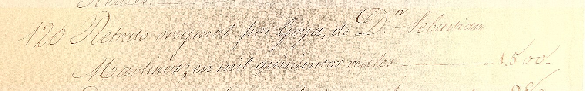

1863 · Madrid
La dote de Josefa García Luz


«120. Retrato original por Goya, de D.n Sebastián Martínez; en mil quinientos reales». Archivo Histórico de Protocolos de Madrid, t. 28102, f. 1934r-1944v.
La bisnieta de Sebastián se casa con Pascual Muñoz, conde del Retamoso. Lleva al matrimonio 309 asientos de pintura y cita en cada uno el número del inventario de Casado: es el puente entre 1828 y 1888. En la imagen, el asiento del Goya.
Tamaño309 asientos
Valor751.354 reales en pintura
Permite verQué entra en la casa Retamoso, y con qué nombre
FuenteArchivo Histórico de Protocolos de Madrid, t. 28102, f. 1934r-1944v
Lesley Crewdson y José Juan Ruiz · De Cádiz a Nueva York · Universidad de Cádiz, 18 de noviembre de 2026. Toca la imagen para verla a tamaño completo. Actualizado: 09-11-2026.